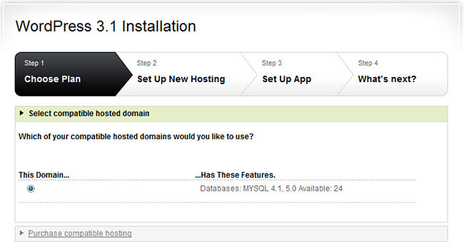
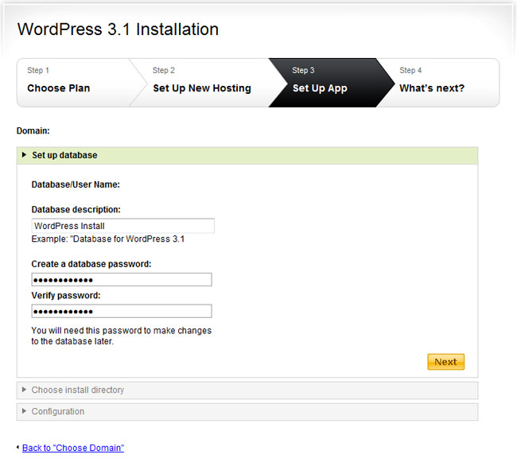
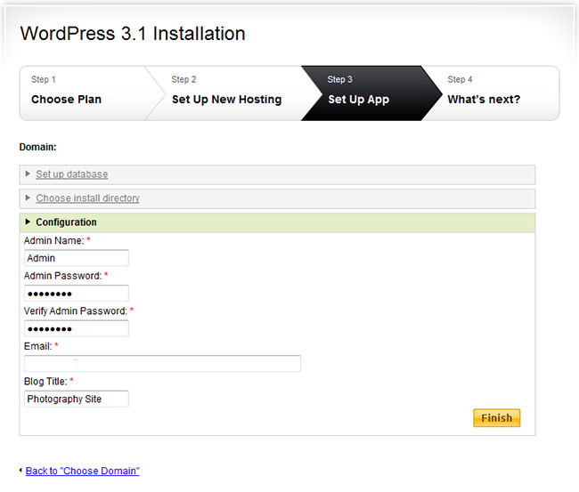

Cookies
Table of Contents
1 HTTP Cookies
1.1 Review notes
- What is State?
- Does a light switch have state?
- Does a dice roll have state?
- Do "commands"/turns within a phone conversation have state?
- If a page is generated with a template, is it considered dynamic or static?
- Are CSS and JS typically static or dynamic?
- Webservers map URLs to what?
- What is the server part of the url http://ischool.berkeley.edu/index.php?
- What are the advantages of separating semantics from presentation?
- Who controls HTML and HTTP specifications?
2 HTTP is Stateless two_col
- Pros
- Simple protocol
- Easily distributable
- No space requirements on server
- Cons
- Can't use relative paths
- Must resend information (eg. Host)
- Client must track state
3 When is State Useful? animate
- Knowing which user
- Logged In / Logged Out
- Shopping Cart
3.1 Think notes
- Examples from class?
3.2 Identification
- Using HTTP commands, can we tell if we've seen this client before?
GET /?name=World&title=Hello HTTP/1.1 Host: localhost
HTTP/1.0 200 OK Content-Type: text/html; charset=utf-8 Content-Length: 231 Server: Werkzeug/0.8.3 Python/2.7.3 Date: Fri, 21 Sep 2012 04:17:46 GMT <!DOCTYPE html> <html lang="en-us"> <head> <meta charset="utf-8"> <title>Hello</title> <link rel="stylesheet" href="static/css/default.css"> </head> <body> <div class="container"> Hello World </div> </body> </html>
3.3 No! notes
- There's nothing in here that indicates an identity
- Even if this user previously used a form to login
- IP doesn't help: offices all use the same IP
- So how do we tell one user from another?
- ie, how can we provide information about the request?
4 HTTP Headers are Meta-information
Host- The host we're trying to contact
Content-Type- The type and format of data in the response or request
Cookie- Information about client, set by server
5 Cookies
GET /?name=World&title=Hello HTTP/1.1 Host: localhost
HTTP/1.0 200 OK
Content-Type: text/html; charset=utf-8
Content-Length: 231
Set-Cookie: visitor-id=1234
Set-Cookie: language=en
Date: Fri, 21 Sep 2012 04:17:46 GMT
<!DOCTYPE html>
<html lang="en-us">
...
GET /?name=World&title=Hello HTTP/1.1 Host: localhost Cookie: visitor-id=1234; language=en
5.1 Breakdown notes
- Send a request (no cookies)
- Server response normally, PLUS we get a cookie
- Subsequent requests include the cookie
5.2 Cookie's Life two_col
- Initial request to server
- Server response with
Set-Cookieheaders- Key-Value pairs, one per header
- Client saves cookie values
- Subsequent requests, client sends cookie values
- Key-Value pairs, many per header
6 Cookie Attributes
- Specified after key-value in
Set-Cookie
- Domain and Path
- Scope of a cookie - when is it active?
- Expires and Max-Age
- When should the browser delete the cookie?
- Secure and HttpOnly
- Further limits scope to a protocol
6.1 Security note notes
- HTTP requests are in plain text, you can see an copy other cookies
- So private cookies are only sent with HTTPS
- Further reading in Cookie attributes
7 2033? two_col
- Maximum amount of time one can set
- ~20 years (can depend on browser)
- Year 2033
7.1 Demo notes
- Open Chrome to check cookies
8 Authentication
PUT /login HTTP/1.1 Host: localhost Content-Length: 26 Content-Type: application/x-www-form-urlencoded username=jim&password=XXXX
HTTP/1.0 200 OK
Content-Type: text/html; charset=utf-8
Content-Length: 231
Set-Cookie: user-id=5678
Set-Cookie: logged-in=true
Date: Fri, 21 Sep 2012 04:17:46 GMT
<!DOCTYPE html>
<html lang="en-us">
...
GET /homepage Host: localhost Cookie: user-id=5678; logged-in=true
Warning: There is something wrong with this example
8.1 Security notes
- Is there anything limiting you from connecting with Telnet and sending an arbitrary user-id? Or setting logged-in?
- So what do we send back instead?
8.2 Secure Authentication
PUT /login HTTP/1.1 Host: localhost Content-Length: 26 Content-Type: application/x-www-form-urlencoded username=jim&password=XXXX
HTTP/1.0 200 OK
Content-Type: text/html; charset=utf-8
Content-Length: 231
Set-Cookie: visitor-id=e734a88a1110fa3d657454b2dd348822
Date: Fri, 21 Sep 2012 04:17:46 GMT
<!DOCTYPE html>
<html lang="en-us">
...
GET /homepage Host: localhost Cookie: visitor-id=e734a88a1110fa3d657454b2dd348822
8.2.1 What is a visitor-id? notes
- Nearly impossible to guess ID
- ID is stored in a database, associated with status:
- logged in
- name
- Server creates the ID
- It is opaque to client, it just sends it back
9 Types of Cookies
- Session
- Exists until browser is closed
- Persistent
- Exists for a specified time
- Secure
- Only sent over secure connections (HTTPS)
- Third-party
- Set for another domain, eg. advertiser
- Ever / Zombie
- Tricks to avoid clearing cookies
9.1 Secure notes
- HTTP is plain text, so if someone can see your requests, they can see your cookie
- How would they use your cookie?
10 Cookie Review
- Are cookies stored on the client or server?
- Are cookies generated on the client or server?
- Can a server trust the cookies being sent?
- Can the browser decide which cookies to send?
- What happens if we clear the
visitor-idcookie from the example?
11 The Auths
- Authentication
- Who are you?
- Authorization
- What are you allowed to do?
- Access Controls
- What can you do to which resources?
11.1 Real World notes
- ID is proven by sending username and password via a form
- Subsequently, ID is proven by providing token via a cookie
- The server handles authorization since we cannot trust the cookie contents
- Variety of ACL schemes that allow you to give RWX privileges for different resources
12 Multi-step Wizards
- Process that takes input from multiple pages
- Doesn't do anything until final page is complete
- How is the handled by HTTP?
12.1 Example

12.2 Example

12.2.1 Where are the choices? notes
- Where are the options we selected in step 1?
- We don't have any account yet, so usually can't store them in DB
- Often they are in
hiddeninput types in the form - Passed along in the wizard
12.3 Example

12.3.1 Final Step notes
- The final step has all of the data, mixed between last page options and
hiddenfields - It creates the account with all of the options
- Another alternative is using a Cookie to track user
- Storing state for that user
- But how long do we store the data for? (We don't know for sure that the user is done)
- What if the user explores options by using different tabs?
13 HTTP is Stateless
- Cookies can simulate state
- But must be passed along each request
- And cannot be trusted by the server
13.1 Good Things notes
- Seems like a PITA, but turns out to be the right choice
- Composability leads to flexibility:
- Can use any datastore to keep user ID info
- Can use any authentication scheme: email, OpenID, etc.
- Lack of trust leads to better security
- vallet key
- DRM trusted the DVD players, but what happened when the players got hacked?
14 Cookies center